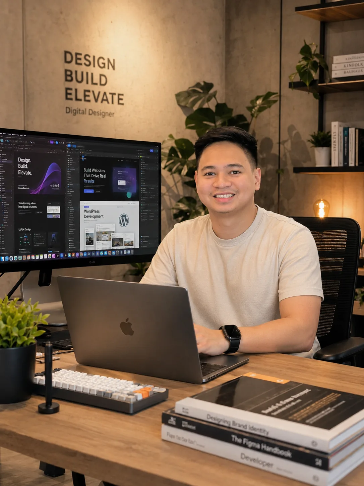

Web Development
Responsive, fast, user-friendly websites built to showcase your business and convert visitors.
View projectsI help businesses build polished websites, intuitive digital experiences, memorable visuals, consistent social content, and engaging video campaigns.

About Me
I combine strategy, design, content, and development to create cohesive brand experiences. Instead of treating every deliverable as a separate task, I connect each project to your larger business goals.
My approach is collaborative, organized, and focused on delivering work that is visually strong, easy to use, and ready to support real growth.
View My Process →Services
Choose one specialized service or combine several for a complete digital solution.
Responsive, fast, user-friendly websites built to showcase your business and convert visitors.
View projectsClear interfaces, thoughtful user flows, wireframes, and high-fidelity digital product designs.
View projectsBrand visuals, campaign graphics, print materials, and marketing designs with consistency.
View projectsContent planning, branded posts, captions, campaign visuals, and organized monthly calendars.
View projectsShort-form videos, reels, promotional edits, motion graphics, color correction, sound design, and platform-ready content.
View projectsSelected Work
Each gallery shows three samples first. Use its own View More button to reveal the remaining projects.
Skills & Tools
Why Work With Me
Get design, development, content, and video support from one reliable creative partner.
Every creative choice is connected to your audience, goals, and desired customer action.
Clear timelines, transparent feedback rounds, and easy-to-follow project updates.
A cohesive visual identity is maintained across websites, graphics, social media, and videos.
How I Work
Client Feedback
Start a Conversation
Ready When You Are